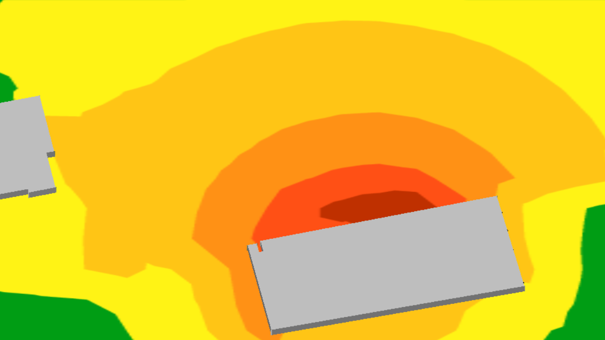
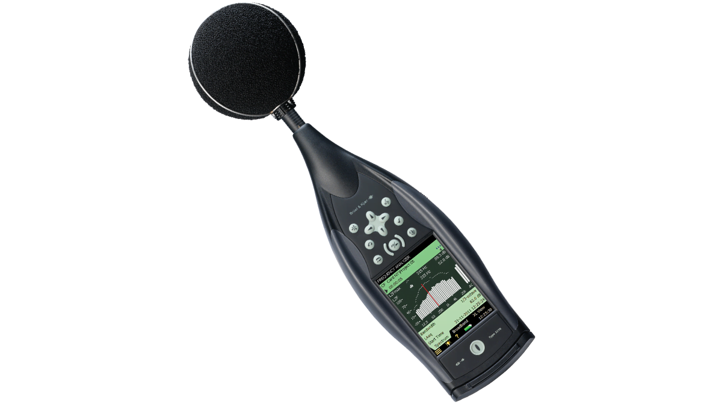
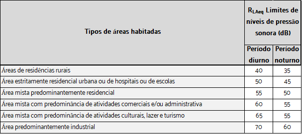
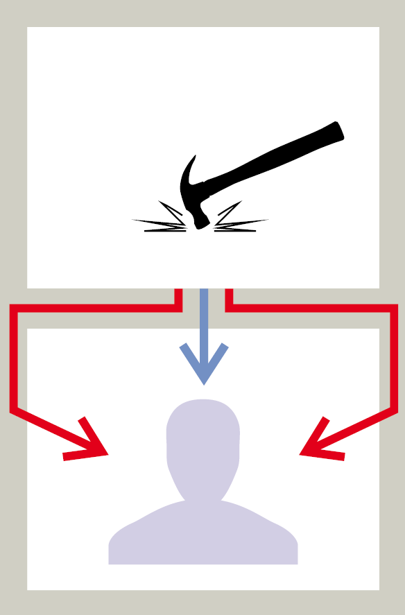
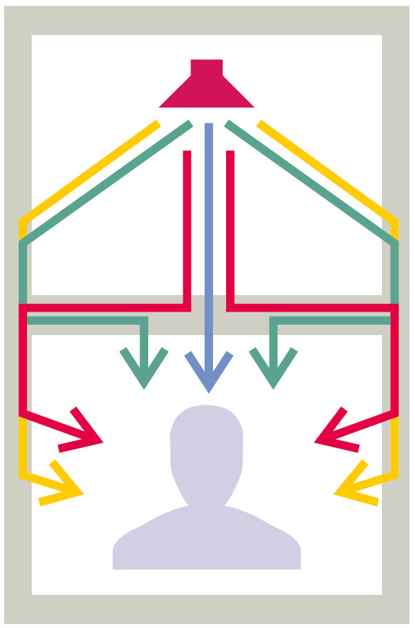
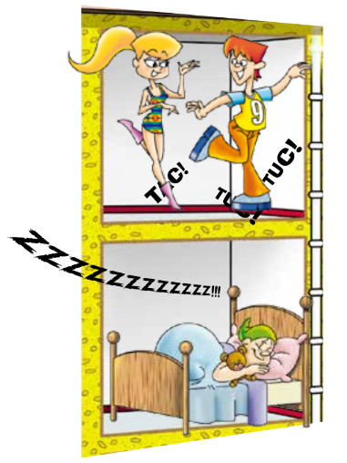
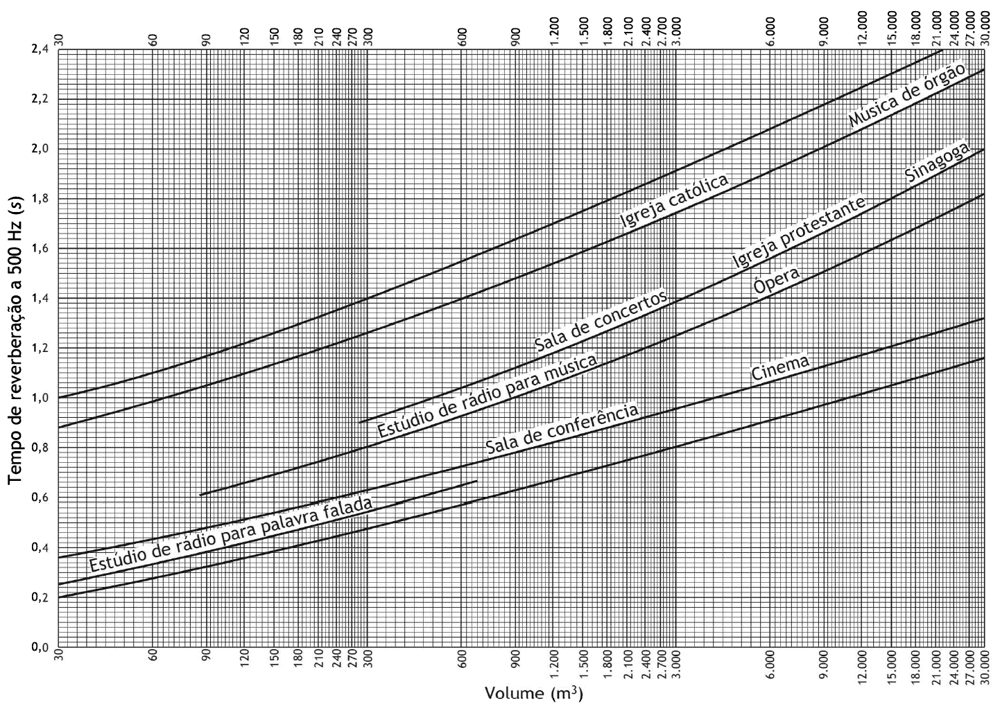

Laudos técnicos e projetos acústicos
Laudos técnicos de acústica são documentos que se amparam em critérios estabelecidos por normas a fim de avaliar um ou autenticar o comportamento sonoro de uma área onde há um desconhecimento de como esses sons se manifestam. Assim, deseja-se revelar os níveis de pressão sonora nessa área para que, ao fim, se obtenha informações suficientes para comparação com os níveis exigidos por Norma, e assim, atestar conclusões referentes à conformidade dos dados coletados com as normas correspondentes à natureza do documento.
Laudos de ruído ambiental, em geral, são documentos que revelam a paisagem sonora de um local, que pode ser uma rodovia com intenso tráfego urbano; uma zona comercial, onde ha muito ruído produzido por diversas fontes sonoras; uma região onde deseja-se saber a intensidade do ruído produzido pelas fontes em um determinado turno do dia, etc.
Laudos de acústica realizados de acordo com a NBR 10.152 são documentos que revelam informações referentes aos níveis de pressão sonora em ambientes internos a edificações. Os dados informados são importantes indicativos para a decisões de projeto, a fim de garantir conforto acústico na edificação.
Os projetos acústicos se amparam em normas afins às dos laudos e, assim como estes, também se ocupam com o estudo de um determinado objeto de avaliação, apoiando-se em ferramentas computacionais que auxiliam no processamento e impressão de resultados, de modo a descrever e esclarecer um evento sonoro. A imagem abaixo ilustra um exemplo disso, em que, a partir de valores declarados de níveis de pressão sonora, é obtido um mapa acústico, que tem por fim descrever como esse evento sonoro se comporta em um caso sob determinadas condições.
Por fim, o laudo é um documento que compara níveis de pressão sonora evidenciados com valores aceitáveis por norma para, posteriormente, averiguar se a situação em que o objeto de estudo se encontra está, ou não, de acordo com esses limites estabelecidos. Portanto, como laudos de acústica servem para fazer constatações acerca de um evento sonoro, é imprescindível que hajam instrumentos de medição para a avaliação sonora que será documentada no relatório. Projetos acústicos visam conduzir o cliente de forma a orientá-lo e oferecê-lo recomendações acerca de uma situação onde há necessidade de conforto acústico sobre determinado local. No caso de projetos acústicos, apesar de serem elementos muito benéficos para a investigação de problemas em acústica, não há uma necessidade tão estrita quanto ao uso desses instrumentos de medição. Essa investigação também pode ser feita com base na avaliação do local onde há necessidade de projeto por meio de simulação computacional.
Instrumentos de medição
A instrumentação básica a fim de avaliar um objeto de estudo (por exemplo: a perda de transmissão sonora entre dois ambientes), é o sonômetro e a fonte omnidirecional, ilustrados na imagem abaixo. Estes dispositivos, juntamente ao amplificador de potência, permitem a caracterização acústica de um local. A utilização desses instrumentos se dá por uma série de ensaios, em que a posição do emissor (fonte sonora) e do receptor (sonômetro, ou medidor de pressão sonora) são variadas a fim de que no pós processamento dos sinais medidos, sejam obtidas informações sonoras individuais do local de análise (por exemplo, como um som é percebido em uma posição do ambiente quando o emissor sonoro está situado em uma outra posição, que pode ser no centro, em um canto do ambiente, e assim por diante.), assim como informações gerais, que refletem como o som se comporta de modo espacial (ou seja, distribuído dentro de determinado espaço).

Muitos prestadores de serviço que trabalham com acústica hoje em dia, sem formação em área específica da acústica, fazem uso de instrumentos em não conformidade com exigências das normas que estabelecem critérios de medição (NBR 10.151 e NBR 10.152). Essa negligência, ou desconhecimento técnico acerca de instrumentação/métodos apropriados para a avaliação acústica de um determinado local, pode comprometer não somente os dados coletados em medições e posteriormente declarados em relatórios, como também a etapa executiva de uma obra, uma vez que, com dados incompletos, ou não confiáveis, sendo tomados como referência para a tomada de decisões, a incerteza mediante ao solucionamento de um problema é maior. Por fim, tais equívocos técnicos podem comprometer o investimento do cliente.
Normas de acústica
No campo profissional da Engenharia Acústica, há uma variedade de normas que referenciam o profissional frente aos procedimentos técnicos, bem como critérios nos quais ele deve amparar seu trabalho diante dos mais diversos cenários. Por exemplo, para medir e avaliar níveis de pressão sonora provenientes de sistemas de transporte, o profissional deve se referenciar na NBR 16.425, que estabelece os métodos de engenharia aplicáveis a sistemas aeroviário, aquaviário, ferroviário, metroviário e rodoviário. A atuação do Engenheiro Acústico também tem significativa importância no contexto da segurança do trabalho (intensamente presente em indústrias). A NR 01 estabelece a hierarquia de controle de riscos a fim de proteger trabalhadores sujeitos à danos físicos/fisiológicos em seu ambiente de trabalho, que inclui a prevenção de possíveis danos auditivos. Assim, outras Normas Regulamentadoras estabelecem parâmetros e diretrizes para prevenção de possíveis acidentes. A NR 15 estabelece os tempos máximos de exposição ao ruído permitidos para trabalhadores que atuam nesse meio. A NR 17 estabelece níveis de pressão sonora associados às mais diversas situações cotidianas (bares noturnos, tráfego rodoviário, salas de aula, tons de voz).
Porém, no desenvolvimento de projetos e laudos de acústica, de modo geral, é mais comum nos depararmos com as normas NBR 10.151, NBR 10.152, NBR 12.179 e NBR 15.575.
NBR 10.151
A finalidade dessa Norma é estabelecer os critérios de medição e avaliação de níveis de pressão sonora em áreas habitadas. Mais especificamente, as aplicações da NBR 10.151 estão voltadas para medição e avaliação dos níveis de pressão sonora em ambientes externos às edificações, em áreas destinadas à ocupação humana, em função da finalidade de uso e ocupação do solo; e também internos, provenientes da transmissão sonora aérea ou de vibração de edificação. A norma estabelece os limites de níveis de pressão sonora para ambientes externos às edificações, em áreas destinadas à ocupação humana, em função da finalidade de uso e ocupação do solo, e requisitos para avaliação em ambientes internos.
Em seu corpo, também consta o procedimento para avaliação de som tonal/ específico/ residual/ impulsivo/ intermitente/ contínuo, assim como os limites de NPS para ambientes externos às edificações em áreas destinadas à ocupação humana, em função da finalidade de uso e ocupação do solo e requisitos para avaliação em ambientes internos.
Segundo a Norma, para que o profissional possa realizar medições acústicas apropriadamente, a classificação da instrumentação utilizada deve ser obrigatoriamente Classe 1 ou Classe 2 para o sonômetro; e Classe 1 para o calibrador. A Norma também estabelece que seja realizado o ajuste do sonômetro com o valor indicado no certificado de calibração mais recente do calibrador sonoro, aplicando-se a devida correção do tipo de microfone, conforme orientações do fabricante, para que medições profissionais possam ser realizadas devidamente.
NBR 10.152
A finalidade dessa Norma é estabelecer os procedimentos técnicos a serem adotados na execução de medições de níveis de pressão sonora em ambientes internos à edificações, bem como valores de referência para avaliação dos resultados em função da finalidade de uso do ambiente.
Segundo a Norma, a avaliação sonora de um ambiente interno de uma edificação deve ser realizada pela comparação de seus níveis de pressão sonora representativos com os respectivos valores de referência para ambientes externos de uma edificação, de acordo com suas finalidades de uso. Em medições realizadas pelo método detalhado, a avaliação deve ser realizada pela comparação dos dados medidos com o nível de pressão sonora equivalente ponderada em A, o nível máximo de pressão sonora e o nível NC representativos do ambiente, tabelados normativamente como valores de referência, de acordo com sua finalidade de uso. A Norma divide os casos específicos, em que esses valores de referência são estabelecidos, em grandes grupos, que são: "Aeroportos, estações rodoviárias e ferroviárias", "Centros comerciais (shopping centers)", "Clínicas e hospitais", "Culturais e lazer", "Educacionais", "Esritórios", "Esportes", "Hotéis", "Residências", e "Outros".

NBR 12.179
Essa Norma fixa os critérios fundamentais para execução de tratamentos acústicos em recintos fechados para a finalidade a qual se destina, a fim de oferecer condições que permitam boa audição às pessoas nele presentes. A NBR 12179 parte dos conceitos fundamentais de acústica de salas (som, ruído, isolamento acústico, condicionamento acústico, tempo de reverberação, decibel, etc.), estabelece condições gerais de avaliação do local e condições específicas para o estudo acústico, apresentando os cálculos necessários para obtenção do T60 (Tempo de reverberação) da sala e valores de isolamento acústico e coeficiente de absorção (α) de materiais acústicos para cálculo em projetos.
NBR 15.575
A NBR 15.575, ou Norma de Desempenho, define, a partir dos níveis admissíveis previstos na NBR 10152, os níveis de desempenho que sistemas construtivos devem ter para atenuar a transmissão dos ruídos gerados externa e internamente nas edificações habitacionais. Assim, regulam-se os níveis de desempenho de paredes externas, das esquadrias em domitórios, das paredes internas que separam duas unidades separadas ou comuns, do conjunto de paredes e portas que separam duas unidades, e dos sistemas de pisos com relação ao ruído aéreo e de impacto. A Norma também estabelece parâmetros para ruídos de equipamentos. Nas incumbências do documento, define-se que os fabricantes devem apresentar ao projetista/empreendedor o desempenho dos seus sistemas quando medidos em laboratório. E o empreendedor deve analisar os dados quanto à capacidade de atenderem a condição de desempenho em campo exigida do construtor.
Essa Norma é divida em cinco partes. A Parte I é referente à instalações, equipamentos prediais e sistemas hidrossanitários. A Parte II aborda sistemas de pisos, estabelecendo os níveis de isolamento de ruído aéreo ou de impacto das estruturas de acordo com o tipo de unidade habitacional, assim como critérios de desempenho mínimo, intermediário e superior de pisos. A Parte III refere-se à sistemas de vedações verticais internos (Paredes), ao passo que a Parte IV aborda as vedações externas (Fachadas). Por fim, a Parte V trata de sistemas de coberturas.
Ruído aéreo e ruído de impacto
Existem dois tipos de transmissões sonoras: transmissão de ruído de impacto e transmissão de ruído aéreo.
A transmissão de ruído de impacto entre duas unidades habitacionais sobrepostas em uma edificação se produz através do próprio sistema de piso (que corresponde à uma via de transmissão direta) e os elementos laterais, ou paredes (que correspondem à quatro vias de transmissão indireta, ou seja, secundárias).
A transmissão de ruído aéreo em uma edificação, para o mesmo caso da situação anterior (duas unidades habitacionais sobrepostas), se reproduz através do próprio sistema de piso (considerada a via de transmissão principal) e as paredes ou elementos laterais (compostas por 12 vias de transmissão indireta). A mesma transmissão, propagada entre duas unidades habitacionais separadas por uma parede, ocorre através da própria parede (correspondendo a uma via de transmissão direta) e dos elementos laterais, tais como paredes/ fachadas/ pisos (correspondendo a doze vias de transmissão indireta).
Assim, em projetos de isolamento acústico, os dois tipos de casos são os de isolamento acústico aéreo (conversações, TV, música, etc.) e os de isolamento acústico ao ruído de impacto (passos, queda de objetos, arrastar de móveis, etc.).
Isolamento acústico
Conforme abordado, o trabalho do profissional especializado em acústica é profundamente vinculado às normas que o guiam e estabelecem os critérios para adequação de projetos. Isso considerado, em projetos de isolamento acústico, em que o objetivo central é garantir privacidade e sossego no ambiente externo ao local onde há emissão sonora, as relações entre as condições estabelecidas pelas normas mencionadas são decisivas para os rumos que o projetista conduzirá ao projeto.
Por exemplo: suponha um empreendimento onde há transmissão sonora através dos seus elementos construtivos, e cuja finalidade de uso são atividades musicais. O que o contratante deseja saber é: o que é necessário, sem que hajam gastos muito exacerbados - que poderiam se atribuir a uma reforma sem um procedimento técnico lógico, ou então a um investimento demasiado em materiais em relação ao que ele precisaria -, para que ele realize o projeto de isolamento acústico em seu estabelecimento? O projetista, primeiramente, partirá de um estudo inicial do local, considerando o nível de pressão sonora máximo emitido no ambiente interno em seu período de atividade, assim como uma avaliação estrutural desse local. Na investigação inicial do problema, o profissional avalia as possíveis causas da transmissão estrutural ocorrida do ambiente interno para o ambiente externo, considerando o desempenho em relação à redução de ruído das partições da edificação. Assim que os "pontos fracos" do sistema construtivo do estabelecimento forem identificados, o projetista recorre a sistemas de reforço, ou à substituição de partições vigentes do local, a fim de atender os critérios estabelecidos pela NBR 10.151 e NBR 10.152. Esse processo é feito por meio de um dimensionamento, com o uso de ferramentas computacionais, considerando elementos construtivos que apresentem índices de redução sonora apropriados para que, ao fim, o local apresente um reforço estrutural suficiente diante do cenário em que o projeto se encontra. Assim, o projetista considera alternativas de soluções cabíveis para o projeto a fim de assegurar uma perda de transmissão eficaz para um bom isolamento acústico do local.
Condicionamento acústico
O projeto de condicionamento acústico visa melhorar a qualidade do som dentro de uma sala, a fim de tornar mais agradáveis as conversações, performances musicais, pregações, palestras, e quaisquer outras atividades-fim que nela forem realizadas.
A análise para o projeto de condicionamento acústico de ambientes toma como referência o Tempo de Reverberação (T60) desejável para ambientes com características semelhantes ao que o objeto de estudo se propõe. O tempo de reverberação, de modo geral, se atribui ao período que o som excitado no ambiente leva até que se torne imperceptível. A imagem abaixo reforça essa abordagem. Através dela, é possível notar a relação entre as dimensões de um local com a característica sonora do mesmo. É claro que a análise não é tão simples assim. Esse tempo de reverberação varia, não somente em seu valor médio, mas conforme a frequência que estiver sendo avaliada, de acordo com os tipos de materiais que estiverem presentes nas superfícies desse local. Assim, são levados em consideração os coeficientes de absorção sonora (α) de todos os elementos pertencentes ao espaço a fim de se levantar informações detalhadas acerca do ambiente e se possa oferecer propostas mais cabíveis para a situação do projeto.
O estudo de condicionamento acústico não se limita apenas ao estudo do tempo de reverberação do local. Este é, além de objeto principal de análise, um veículo condutor para o projetista na investigação de outros parâmetros objetivos importantes para a efetivação de um bom projeto. Alguns deles são o D50, o C80, STI, Articulation Index, distância de privacidade, entre outros.
Paralelamente aos absorvedores, outro dispositivo fundamental, em determinadas situações, para a qualidade sonora dentro de um ambiente, são os difusores. Sua função é promover uma distribuição sonora mais homogênea dentro de um espaço. A faixa de frequências de difusão dependem da forma como ele é projetado, e essa faixa de operação, assim como o número de módulos (ou painéis) varia conforme a necessidade do projeto. Lugares mais amplos, em geral, requerem uma quantidade maior de painéis do que em locais menores; e locais com geometrias não retangulares tendem a necessitar mais desses dispositivos devido ao fato de a distribuição sonora ser favorecida em determinadas regiões da sala em detrimento de outras.
Por que fazer o projeto acústico?
Certamente você já foi afetado por situações em que estava assistindo a um show e não conseguia compreender sequer uma palavra que o cantor estava pronunciando, ou então que a banda inteira parecia um grande massa sonora confusa, a ponto de você nem mesmo conseguir identificar a música que estavam tocando. Pior que isso, talvez você já tenha chegado em casa após um evento assim com tonturas, e possivelmente nem vinculou com a possibilidade de o problema não ser a banda em si, mas que o local que você frequentou não tinha um projeto acústico adequado. Em outro cenário, talvez você já tenha se incomodado bastante com um vizinho ou um evento próximo a sua residência em que a situação não se resolve e você precisa de uma solução imediata, ou seja, você precisa urgentemente isolar o seu espaço do espaço vizinho que está continuamente invadindo o lugar onde você vive com ruídos muito elevados. Ainda em outro contexto, talvez dentro de sua casa, mesmo com portas trancadas, você ainda sente que não tem privacidade sobre outros ambientes dentro do seu templo, pois todo som que você emite do local onde você está é ouvido na sala ao lado, e vice versa. Esses são apenas alguns exemplos de situações em que um projeto acústico adequado é fundamental para maior satisfação de quem sofre com sua ausência.
Ao projeto acústico, podemos seguramente associar alguns termos com os quais relacionamos os seus benefícios. Eu
diria que o principal deles é conforto acústico, pois pode ser associado tanto a projetos de isolamento acústico,
que visam oferecer maior privacidade a quem por ele se interessa; como também a projetos de condicionamento acústico,
cujo fim é melhorar a qualidade sonora dentro de um local. Outros termos que se atribuem aos benefícios proporcionados
pelo projeto acústico são: saúde auditiva, associada a uma diminuição da exposição auditiva ao ruído, seja pelo seu
controle ou através da redução sonora dentro de determinado local; confidencialidade, associada à privacidade entre ambientes distintos por meio de
um dimensionamento acústico adequado; inteligibilidade, proporcionando uma melhora na qualidade da fala ou música dentro
de uma sala; e sossego, garantindo que um momento pessoal não será afetado ou interferido por um ruído indesejável que estiver
sendo produzido em um ambiente próximo.


Ainda tem dúvida se vale a pena contratar um profissional para fazer um projeto acústico para você? Divida o seu caso comigo por aqui.